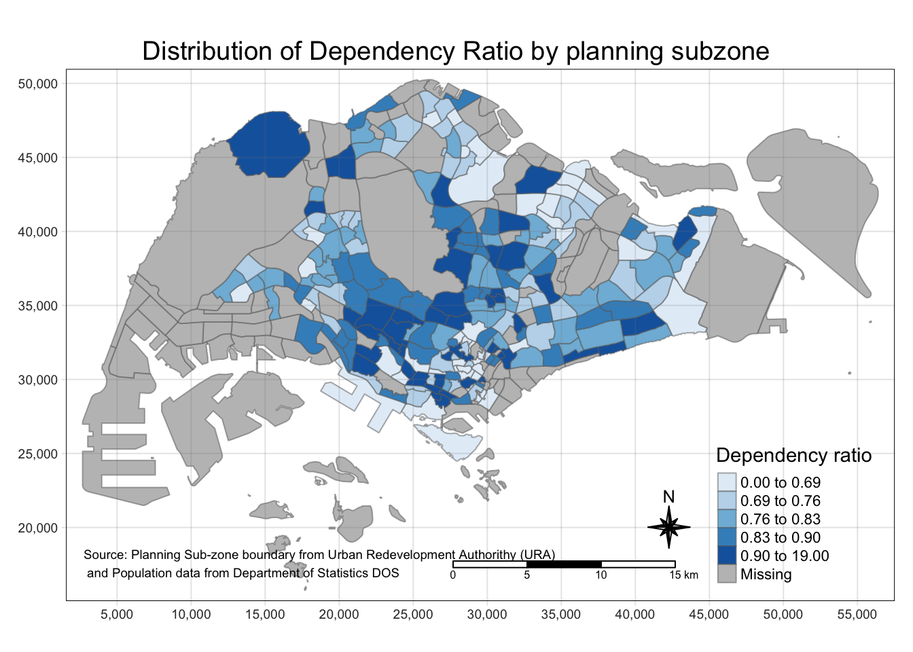

pacman::p_load(tmap, tidyverse, sf)Hands-on_Ex02
Choropleth Mapping with R
Getting Started
Load packages
Importing Geospatial Data into R
mpsz <- st_read(dsn = "data/geospatial", layer = "MP14_SUBZONE_WEB_PL")Reading layer `MP14_SUBZONE_WEB_PL' from data source
`/Users/keredpoh/Desktop/keredpoh/IS415-GAA/Hands-on_Ex/Hands-on_Ex02/data/geospatial'
using driver `ESRI Shapefile'
Simple feature collection with 323 features and 15 fields
Geometry type: MULTIPOLYGON
Dimension: XY
Bounding box: xmin: 2667.538 ymin: 15748.72 xmax: 56396.44 ymax: 50256.33
Projected CRS: SVY21mpszSimple feature collection with 323 features and 15 fields
Geometry type: MULTIPOLYGON
Dimension: XY
Bounding box: xmin: 2667.538 ymin: 15748.72 xmax: 56396.44 ymax: 50256.33
Projected CRS: SVY21
First 10 features:
OBJECTID SUBZONE_NO SUBZONE_N SUBZONE_C CA_IND PLN_AREA_N
1 1 1 MARINA SOUTH MSSZ01 Y MARINA SOUTH
2 2 1 PEARL'S HILL OTSZ01 Y OUTRAM
3 3 3 BOAT QUAY SRSZ03 Y SINGAPORE RIVER
4 4 8 HENDERSON HILL BMSZ08 N BUKIT MERAH
5 5 3 REDHILL BMSZ03 N BUKIT MERAH
6 6 7 ALEXANDRA HILL BMSZ07 N BUKIT MERAH
7 7 9 BUKIT HO SWEE BMSZ09 N BUKIT MERAH
8 8 2 CLARKE QUAY SRSZ02 Y SINGAPORE RIVER
9 9 13 PASIR PANJANG 1 QTSZ13 N QUEENSTOWN
10 10 7 QUEENSWAY QTSZ07 N QUEENSTOWN
PLN_AREA_C REGION_N REGION_C INC_CRC FMEL_UPD_D X_ADDR
1 MS CENTRAL REGION CR 5ED7EB253F99252E 2014-12-05 31595.84
2 OT CENTRAL REGION CR 8C7149B9EB32EEFC 2014-12-05 28679.06
3 SR CENTRAL REGION CR C35FEFF02B13E0E5 2014-12-05 29654.96
4 BM CENTRAL REGION CR 3775D82C5DDBEFBD 2014-12-05 26782.83
5 BM CENTRAL REGION CR 85D9ABEF0A40678F 2014-12-05 26201.96
6 BM CENTRAL REGION CR 9D286521EF5E3B59 2014-12-05 25358.82
7 BM CENTRAL REGION CR 7839A8577144EFE2 2014-12-05 27680.06
8 SR CENTRAL REGION CR 48661DC0FBA09F7A 2014-12-05 29253.21
9 QT CENTRAL REGION CR 1F721290C421BFAB 2014-12-05 22077.34
10 QT CENTRAL REGION CR 3580D2AFFBEE914C 2014-12-05 24168.31
Y_ADDR SHAPE_Leng SHAPE_Area geometry
1 29220.19 5267.381 1630379.3 MULTIPOLYGON (((31495.56 30...
2 29782.05 3506.107 559816.2 MULTIPOLYGON (((29092.28 30...
3 29974.66 1740.926 160807.5 MULTIPOLYGON (((29932.33 29...
4 29933.77 3313.625 595428.9 MULTIPOLYGON (((27131.28 30...
5 30005.70 2825.594 387429.4 MULTIPOLYGON (((26451.03 30...
6 29991.38 4428.913 1030378.8 MULTIPOLYGON (((25899.7 297...
7 30230.86 3275.312 551732.0 MULTIPOLYGON (((27746.95 30...
8 30222.86 2208.619 290184.7 MULTIPOLYGON (((29351.26 29...
9 29893.78 6571.323 1084792.3 MULTIPOLYGON (((20996.49 30...
10 30104.18 3454.239 631644.3 MULTIPOLYGON (((24472.11 29...Importing Attribute Data into R
popdata <- read_csv("data/aspatial/respopagesexfa2011to2020.csv")Rows: 738492 Columns: 7
── Column specification ────────────────────────────────────────────────────────
Delimiter: ","
chr (5): PA, SZ, AG, Sex, FA
dbl (2): Pop, Time
ℹ Use `spec()` to retrieve the full column specification for this data.
ℹ Specify the column types or set `show_col_types = FALSE` to quiet this message.Data Preparation
Context: Before a thematic map can be prepared, you are required to prepare a data table with year 2020 values. The data table should include the variables PA, SZ, YOUNG, ECONOMY ACTIVE, AGED, TOTAL, DEPENDENCY.
YOUNG: age group 0 to 4 until age groyup 20 to 24, ECONOMY ACTIVE: age group 25-29 until age group 60-64, AGED: age group 65 and above, TOTAL: all age group, and DEPENDENCY: the ratio between young and aged against economy active group
popdata2020 <- popdata %>%
filter(Time == 2020) %>%
group_by(PA, SZ, AG) %>%
summarise(`POP` = sum(`Pop`)) %>%
ungroup() %>%
pivot_wider(names_from=AG,
values_from=POP) %>%
mutate(YOUNG = rowSums(.[3:6])
+rowSums(.[12]),
ECONOMY_ACTIVE = rowSums(.[7:11]) +
rowSums(.[13:15]),
AGED = rowSums(.[16:21]),
#Column 3 to 6 and column 12 are under 24 yrs old
#Column 7 to 11 and 13 - 15 are between 25 - 64
#Column 16 to 21 are 65 and above
TOTAL = rowSums(.[3:21]),
DEPENDENCY = (YOUNG + AGED)
/ECONOMY_ACTIVE) %>%
select(PA, SZ,
YOUNG, ECONOMY_ACTIVE, AGED,
TOTAL, DEPENDENCY)`summarise()` has grouped output by 'PA', 'SZ'. You can override using the
`.groups` argument.#rowSums() tallies the sum of values in the columns specifiedQuestion : |> causes an error at rowSums(.[3:6]) while %>% has no issues
Joining the attribute data and geospatial data
popdata2020 <- popdata2020 %>%
mutate_at(.vars = vars(PA,SZ),
.funs = funs(toupper)) |>
filter(ECONOMY_ACTIVE > 0)Warning: `funs()` was deprecated in dplyr 0.8.0.
ℹ Please use a list of either functions or lambdas:
# Simple named list: list(mean = mean, median = median)
# Auto named with `tibble::lst()`: tibble::lst(mean, median)
# Using lambdas list(~ mean(., trim = .2), ~ median(., na.rm = TRUE))popdata2020# A tibble: 234 × 7
PA SZ YOUNG ECONOMY_ACTIVE AGED TOTAL DEPENDENCY
<chr> <chr> <dbl> <dbl> <dbl> <dbl> <dbl>
1 ANG MO KIO ANG MO KIO TOWN CENTRE 1440 2640 770 4850 0.837
2 ANG MO KIO CHENG SAN 6660 15380 6080 28120 0.828
3 ANG MO KIO CHONG BOON 6150 13970 6450 26570 0.902
4 ANG MO KIO KEBUN BAHRU 5500 12040 5080 22620 0.879
5 ANG MO KIO SEMBAWANG HILLS 2130 3390 1270 6790 1.00
6 ANG MO KIO SHANGRI-LA 3970 8430 3540 15940 0.891
7 ANG MO KIO TAGORE 2220 4160 1520 7900 0.899
8 ANG MO KIO TOWNSVILLE 4720 11430 5050 21200 0.855
9 ANG MO KIO YIO CHU KANG EAST 1190 2230 740 4160 0.865
10 ANG MO KIO YIO CHU KANG WEST 6610 12810 4680 24100 0.881
# … with 224 more rows# mutate_at(.vars = , .funs =) : vars() selects columns. funs() applies a function on all records
#toupper converts from lower case to uppercase as a defaultUse left_join() to combine geospatial data and attribute table by mpsz.SUBZONE_N and popdata2020.SZ as common identifier
mpsz_pop2020 <- left_join(mpsz, popdata2020, by = c("SUBZONE_N" = "SZ"))write_rds(mpsz_pop2020, "data/rds/mpszpop2020")Choropleth Mapping Geospatial Data Using tmap
Plotting a choropleth map quickly using qtm()
tmap_mode("plot")tmap mode set to plottingqtm(mpsz_pop2020,
fill = "DEPENDENCY")
Notes:
tmap_mode() with “plot” produces a static map whereas “view” produces an interactive mode
fill maps the variable attribute
Creating a choropleth map by using tmaps element: Similar to ggplot2, use “+” as its adding on layers to the plot
tm_shape(mpsz_pop2020) +
tm_fill("DEPENDENCY",
style = "quantile",
palette = "Blues",
title = "Dependency ratio") +
tm_layout(main.title = "Distribution of Dependency Ratio by planning subzone",
main.title.position = "center",
main.title.size = 1.2,
legend.height = 0.45,
legend.width = 0.35,
frame = TRUE) +
tm_borders(alpha = 0.5) +
tm_compass(type="8star", size = 2) +
tm_scale_bar() +
tm_grid(alpha =0.2) +
tm_credits("Source: Planning Sub-zone boundary from Urban Redevelopment Authorithy (URA)\n and Population data from Department of Statistics DOS",
position = c("left", "bottom"))